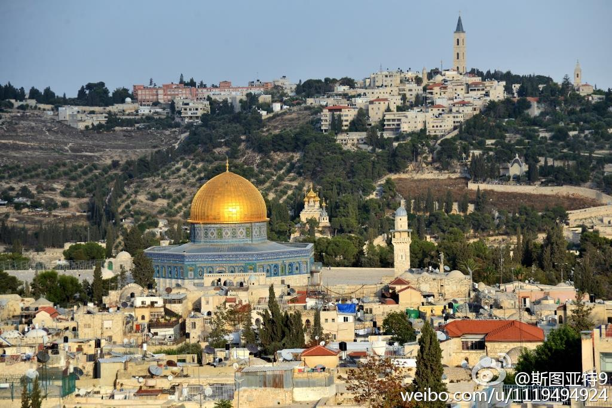
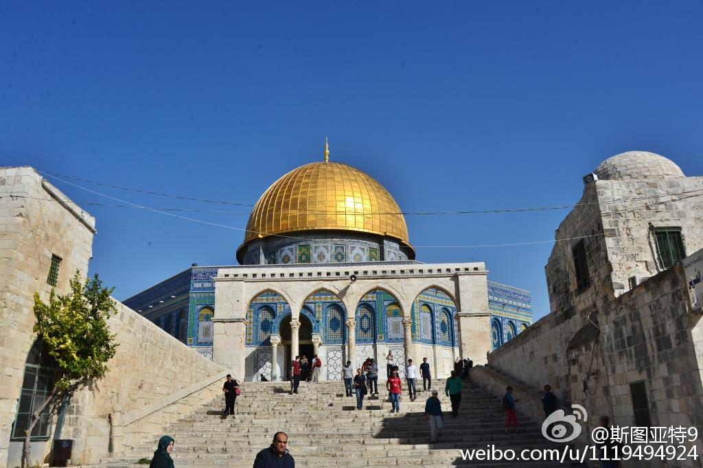
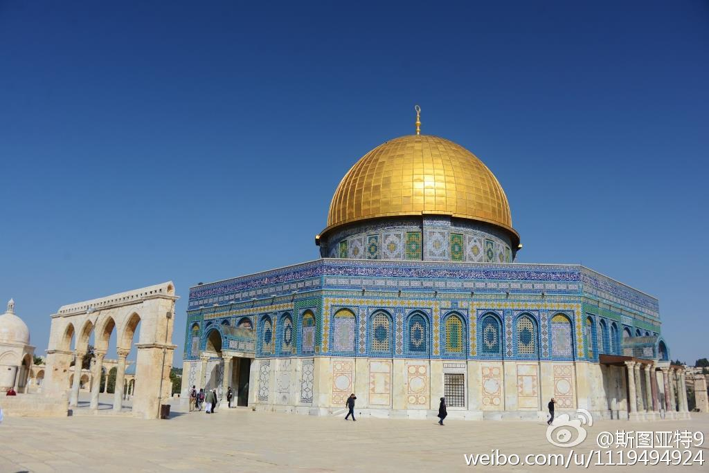
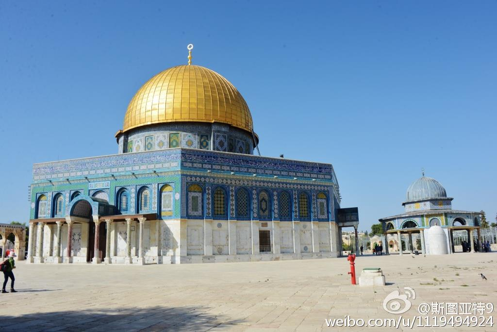
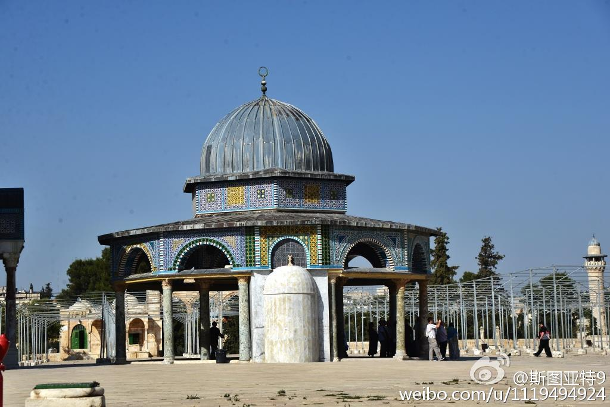
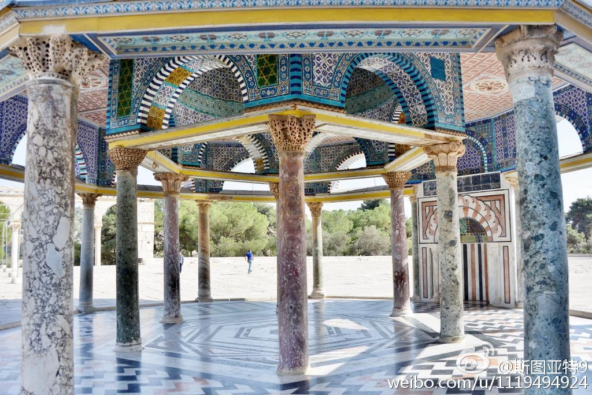
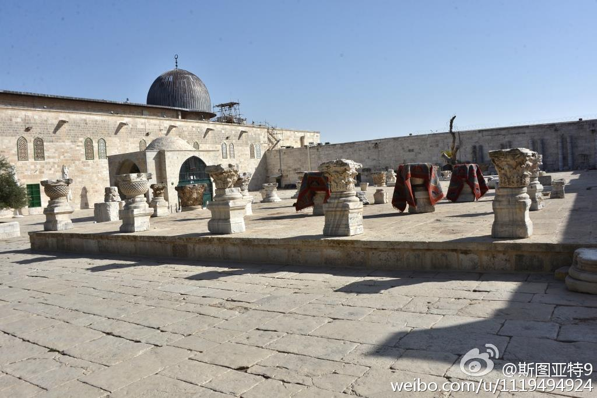
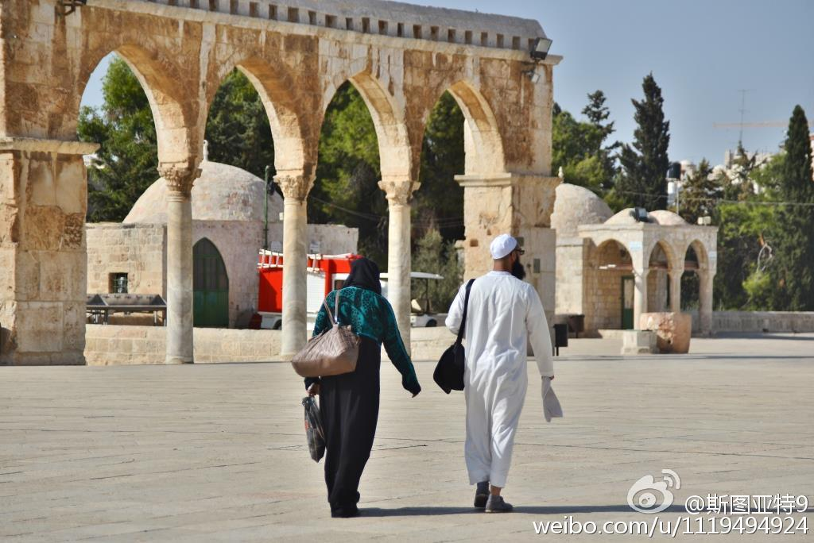

约旦皇后今年五月时候谈ISIS： 网页链接 "focus on the religious character…give them undeserved legitimacy" “ISIS wants to be called Islamic…because any action against them will automatically be called a war against Islam…it will help them with their recruiting.”
巴黎恐怖袭击以后，一部分中国网民掀起一股黑穆斯林热。很明显这背后反映的这拨人的想法不是一朝一夕形成的。究竟这股简单化反穆斯林的思想，是怎么培育起来的呢？国家宣传教育或境外反动势力好像都没有散播过这种思想。那这些人形成这些想法的来源是什么呢？
阿拉伯人占领拜占庭帝国的耶路撒冷时，犹太人等当作救世主欢迎他们。选择已废弃的圣殿山的原因之一是不碰基督徒的区域。穆斯林甚至禁止进入基督区。从占领耶路撒冷开始，以色列就禁止犹太人在圣殿山祈祷。上个月的巴人暴动源于激进的犹太人试图闯入圣殿山祈祷。他们认为以色列政府有意改变圣殿山现状。@斯图亚特9:圣殿山，犹太人认为历史上的第一、二圣殿所在地，罗马帝国征服后摧毁。公元638年伊斯兰帝国征服耶路撒冷后将它重新修整，修建了穆斯林历史上第一个标志性建筑—这个金色的圆顶建筑。它起初并非清真寺而是一个融合了基督教风格的神社，也允许犹太人祈祷。现在圣殿山只允许穆斯林祈祷，间歇时开放参观。 
我也开始认为，巴勒斯坦独立或许并不现实。刨去犹太人定居点及耶路撒冷等问题，如何保证巴勒斯坦国有够强的中央权力制止哈马斯等发动恐怖袭击也会是以色列人最终会很担心的问题。也许现实的解决方案是，以色列放弃犹太国家的定位，建立一个联邦式的国家（像加拿大的法语区一样），耶路撒冷归巴勒斯坦。
 网页链接 "focus on the religious character…give them undeserved legitimacy" “ISIS wants to be called Islamic…because any action against them will automatically be called a war against Islam…it will help them with their recruiting.”
网页链接 "focus on the religious character…give them undeserved legitimacy" “ISIS wants to be called Islamic…because any action against them will automatically be called a war against Islam…it will help them with their recruiting.”